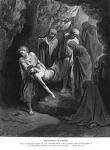

Hapo Mwanzo Kulikuwa Na Neno

Lipuko Mkuu!
Kila Disemba tunaanza kutarajia sherehe kubwa ya mwaka. Maduka yote yanawashwa na taa na puluki ( mapema na mapema kila mwaka huonekana) tunafungilia miangaza katika nyumba zetu na kuupamba mti nahata vichochoro vya miji mingi umetameta kwa miangaza karibu na majumba mengi. Na msisimko mkuu ni? Zawadi! Ni kipi tutakachopata? Inaweza kuwa ni kile tumetumainia? Hatuwezi kuisubiria Disemba 25th!

Lango Nyamafu
Ndivyo ilivyofanyika miaka 2000 iliyopita wakati watu walingoja na kutaraji walifanya nyumba zao zote kupambwa ili kutarajia kizaliwa kwa Yesu. walinunuliana zawadi kwa kujitayalisha kwa huku kungoja kwa muda mwingi. Alipozaliwa tangazo lilitoka nje dunia mzima? Wakati alizaliwa, tangazo lilienda ulimwenguni kote kuwa mwokozi amekuja mwishowe?
Sio kabisa.

Alipozaliwa Yesu Bethlehemu, unaojulikana kuwa mji mkuu wa Daudi(kumbuka?) ni wachache tu wa watu waliokuwa wanafahamu ili. Ni mariamu na Yusufu mchumbawe. Watu waliokuwa wanamiliki boma la ng’ombe alikozaliwa huenda walijua kuwa Yesu alizaliwa. Na hivyo haikuweza kuwa na muhimu wowote kwao.
Hata hivyo, kulikuwa na shangwe na vigelegele binguni tunajua kwa kuwa Luka 2:8-14 hutuambia kuwa kundi kubwa la malaika waliwatokea wachungaji wa kondoo usiku wa kuzaliwa Yesu.Awakuweza kutangaza kuwa mtoto Yesu amezaliwa, isitoshe walitangaza kuwa masii ambaye Wayahudi walikuwa wamngoja kwa muda mrefu.
Ni baada ya miaka thelathini ambapo mtu alianza kudadisi hilo.
Wanaume Wanne, Hadithi Nne

Baada ya miaka ya kufa, kufufuka na kupaa mbinguni kwa Yesu.wanaumme wanne waliamashishwa kuandika kuhusu maisha ya Yesu.Vitabu vinne vya kwanza vya agano jipya vilipewa majina ya walioandika wasifu huo (hivi huitwa injili): Mathayo, Mariko, Luka na Yohana.
Hawakuweza kujadiliana baina yao inawezekana kuwa hawakuweza kujua kuwa mwengine yeyote alikuwa anaandika kumhusu Yesu. Mathayo ,Luka na Yohana huenda walijua au kuwahi kuisoma injili ya Mariko wasomi wanamini kuwa ulikuwa wasaifu wa kwanza wa Yesu kuandikwa.Lakini vitabu hivyo viliandikwa.

Wakati watu hutoa hadithi kuhusu tukio huenda wakajumuisha mawazo yao kama sehemu muhimu. Na hivi ndivyo ilivyokuwa juu ya Mathayo, Mariko, Luka na Yohana. Wengine huuzisha matukio au hadithi na wengine hukosa kuhuzisha. wengine hutoa matukio kwa mpangilio tofauti.
Kwa mfano ni Mathayo na Luka tu ambao hutoa hadithi ya kuzaliwa Yesu. Pengine kwa akili ya Luka ilikuwa muhimu watu kujua kuwa Yesu alizaliwa na msichana Bikira Mariamu. Yusufu mchumba wake mariamu hakuwa babake Yesu; Yesu alikuwa mwana wa Mungu (Luka 1:26-38).
Mungu alimwahidi Ibrahimu kuwa Dunia yote itabarikiwa kupitia mfalme atayekuja kupitia uzao wake. (Mwanzo 12:3) Mathayo anajukumika kutuonyesha kuwa yesu alikuwa uzao wa Ibrahimu. Yesu alikuwa kuthibitika wa unabii wa kale
Kwa upande wa Mariko na Yohana wanachukulia rahisi tu kuwa wakati walikuwa wanaandika juu ya yesu kila mtu alikuwa anajua wanayemtaja. Kwa wakati huu Yesu alikuwa wa umarufu sana. Kwa hivyo Mariko na Yohana wanaanza kuandika kuhusu Yesu alipoanza huduma yake hapa Duniani. Hapa yesu alikuwa miaka thelathini.
Masii Asiyetarajiwa

Tuliposoma kuhusu manabii waliotabiri kuwa Israeli itaangushwa na Siria na babloni tunasoma pia hao manabii waliongea kuhusu manabii waliotabiri kuwa mfalme, masii, mwokozi atakuja kutoka kwa uzao wa Daudi. Unabii huu uliwapa Wayahudi Imani kuwa Israeli itakuwa taifa kuu tena. Kuwa mfalume atakuja kuwashinda adui wa waisraeli na kuwafanya wenye mamlaka watakaotawala dunia yote.
Lakini Wayahudi hawakuwa wanasoma unabii wote, kama walikuwa, hawakuwa wanaelewa mengi yao. Nabii alipeana maelezo aina mbili kuhusu masii atakayetumwa na Mungu. Mmoja enyewe atakuwa mtawala mkuu sana. Kitu Wayahudi hawakuelewa ni kwamba huyu mtawala atatoka mahali haikuwa imejulikana, na hatakuja na ukuu, (kumbuka usiku mtulivu uliokuwa Bethlehemu). huyu mfalme mpya atakuwa ni mtu wa huzuni, kuomboleza na uchungu. Sio utukufu wa kifalme na mamlaka.
Kama watu walioshindwa na waliokufa moyo Wayahudi hawakuwa wanatarajia masii mtu mnyenyekevu vile Yesu alikuwa. Walikua wanatarajia mtu mwenye mamlaka kiliko huyu.
Yesu alipokuja akaishi kati yao hawakumtambua kama masii walipomwona.

Mafundisho ya Yesu
Kumbuka Yesu alikuwa mahali ambapo walikuwa chini ya sheria ya nchi nyingine. wakati huu ulikuwa uongozi mkuu wa Kirumi. yesu alikuwa kwa nchi iliyokuwa rahisi sana. Wayahudi walikuwa watu waliodhamini dini sana na jirani zao walikuwa wakulima au wavuvi au wafanyabiashara. (Yusufu bwana wa mamake alikuwa seremala kibiashara).
Kwa sababu hii Yesu alijaribu kufundisha kweli za kiroho kupitia hadithi zinazoitwa mafumbo yaliyowahusisha watu jamii yake ilizoea na kuelewa.

- Mpazi akipanda mbegu katika shamba lake (Mathayo 13:2-23)
- Mwana aliyekataa kutii wazazi wake lakini anawarudia kwa kutubu dhambi zake (Luke 15:11-32)
- Mchungaji aliyepoteza kondoo wake moja.

Wafarisayo
Wakati wa Yesu wakuani ( pia waliitwa Wafarisayo- neno ambalo linamaanisha waliowekwa kando). Walitawala maisha ya siku kwa siku ya Wayahudi. Wakuani walitoka katika moja ya kabila la Israeli yenye Mungu alichagua kwa kusudi ya iyo kazi. Walawi (kutoka kwa kabila la Lawi) waliichukulia kuwa kazi yao kuwafanya Wayahudi wasiishi vile walikuwa kitambo. Walijua kuwa na kazi yao kusema na kufafanua bibilia kwa watu (kumbuka tulichosema awali kuwa kusudi la Mungu la Bibilia kwa kila mtu)
Yesu hakutoka kabila la lawi, kwa hivyo Yesu hakuwa kuhani.

Kuwa rabi ama mwalimu wa kweli wa Bibilia na maarifa, mtu alifaa kuwa na mafundisho marefu katika shule za rabii.
Yesu hakuwa ameenda shule za kirabii kwa hivyo wafarisayo hawakuona kuwa anafaa kuwa hivyo.
Hata katika mwanzo wa huduma yake Yesu alikorofishana na viongozi wa kidini. Umati ulikusanyika kusikiliza yesu akifundisha katika mojawapo ya mafundisho yake yaliyojulikana sana mahubiri mlimani (inawezapatikana katika Mathayo 5 na Luka 6) kila neno alisema liliharibu kile wafarisayo walifanya watu kuamini.
Baadhi ya mambo yesu alitaka wafuasi wake kusoma ni kama:
- Mungu anawapenda watu na anataka wampende pia. njia ya kuonyesha mapenzi yetu kwa Mungu ni kupitia kutii sio barua ya kisheria lakini roho pia pia kuwa msema kweli. Yesu aliwambia wafuasi wake kuwa wa huruma, wenye upole na wakweli.
- Yesu anataka wafuasi wake wajue kwa penzi lao kwa waumini wenzao, kupenda hata adui zao.
Yesu anataka wafuasi wake wajue kwa penzi lao kwa waumini wenzao. kupenda hata adui zao kile Yesu alitaka wafuasi wake kujua ni kuwa yeye ni mwana wa Mungu. kuwa ukombozi wa dhambi unatokana naye. Kifungu kinachojulikana sana kutoka kwa Bibilia Mungu alikuwa anafanya agano na mwanadamu. (Yohana 3:16):
Kwa maana jinsi hii Mungu aliupenda ulimwengu hata kamtoa mwana wake wa pekeeili yeyote amwaminiye asipotee bali awe na uzima wa milele.
Tangazo hili kutoka kwa Yesu lilikuwa muhimu kwa sababu mbili:. kwanza wazo kuwa Yesu ni mwana wa Mungu halikuwa linakubalika na Wayahudi wengi. inawezakanaje mwanadamu wa kiharisia awe Mungu? Jambo la pili ambalo viongozi wa kidini wakati wa yesu hawangekubali ni kuwa wokovu haukuwa umewekewa Wayahudi, na Yesu alikisema yeyote amwaminie atakuwa mwana wa mungu (Yohana 1:12).
Wasadukayo
Wasadukayo walikuwa watu maharufu na matajiri waliuokuwa wakati wa yesu walikuwa kama wanasiasa wa kirumi kwa hivyo walifurahia nguvu ya kisiasa. Wasadukayo wakati mwingine walichukulia kazi ya kukusanya ushuru wa Warumi na wakati mwingine walikuwa waongo kuhusu ushuru huo kuhitaji watu kulipa zaidi kuliko walivyohitajika na kujiwekea nyingine. Wasadukayo walichukuliwa kuwa wasaliti na Wayahudi wengi kwa sababu ya uhusiano wao wa karibu na Warumi waliochukiwa.

Shida ya Yesu
Vile tuliona hapo awali Yesu alienda kuwafundisha umati na kutangaza habari njema kwa kila mmoja kuhusu Mungu na pendo lake. Wafarisayo hawakutaka hivyo kabisa. walitaka wao peke yao ndio wawe na mamlaka ya kidini kati ya Wayahudi. Yesu alifundisha watu kufikiria kwa undani sana kuhuso mambo ya kiroho zaidi vile wakuhani walivyofanya na wakampenda kwa sababu hiyo.

Wasadukayo hawakupenda umati yesu alikuwa akiwavuti vilevile. Umati huo haungeweza kidhibitika. Ikiwa Yesu alitaka umati kando yake ili wamfuate ili waasi Warumi, wangefanya nini kuuzuia?
Wasadukayo walijua kuwa hata umati mkuu wa Wayadi haungelinganishwa na Jeshi lenye nguvu la Rumi.Ikiwa Jeshi la Rumi lingeweza kuzima jaribio la uasi la Wayahudi. Ikiwa Warumi wangevunjiria chini uasi wa Wayahudi (takriban miaka 35 baada ya yesu iyo ndio walifanya). uwezo wao wa kisiasa haukuwa kitu kwa Warumi, na Wasadukayo hawakutaka kupoteza mamlaka yao kupitia mtu rabii kama yesu.

Kitu kibaya zaidi alifanya ni kuwatangazia watu. Kuwa yeye alikuwa mwana wa Mungu. Yesu aliwambia kuwa yeye ni masii ambaye walikuwa wakimngoja kwa muda mrefu. kwa wafarisayo hii ilikuwa kukufuru (kumdharahu Mungu kwa hali ya juu) katika sharia ya Wayahudi. Ulikuwa uhalifu ambao adabu yake ilikuwa kifo.
Wakati baada wakati Yesu alifanya muujiza ili kuthibitisha maneno yake kuwa yeye ni masii. aliponya wagonjwa, vupofu wakaona na vilema wakatembea. hata alifufua mtu kutoka kwa wafu!
Yesu alionekana kuwa tishio kwa wafarisayo ( kwa sababu aliwafanya watu kutilia shaka uwezo wao) na kwa wasudukayo (angekuwa tishio kwa mamlaka yao).
Wafarisayo na wasadukayo kwa kawaida hawakuwa marafiki na hawangefanya mambo kwa pamoja.

Usiku moja wakati Yesu alikuwa anaomba Yuda Iskariote mtu ambaye alikuwa mmoja wa kundi la yesu la karibu la marafiki (wafuasi wake kumi na wawili) aliongoza kundi la Wafarisayo na Wasadukayo mpaka mahali alijua Yesu alikuwa anapenda kuomba katika shamba la Gethesamane. Yesu hakukataa kukamatwa hata kama alijua hakuwa amefanya uhalifu wowote.
Waliomshtaki Yesu walimpeleka kwa Kayafa, kuhani mkuu wa hekalu kufanya majaribio ya kisili. walimwambia Yesu alikuwa na makosa ya kukufulu kwa sababu ya madai yake kuwa yeye ni masii.

Vile alisimama mbele ya kuhani mkuu, Yesu akasema ‘mimi ni masii na mtaniona nikiketi katika mkono wa kuume wa baba’ (Mariko 14:62).
Hata kama mashahidi wa uongo walikuwa wamekusanyika kutoa ushahidi dhidi ya Yesu. Kayafa aliamua kuwa maneno ya Yesu pekee nitosha kuhukumiwa, akahukumu kuwa majibu ya maneno ya Yesu ni kifo.
Wayahudi hawangefanya hukumu kwamba kama hii bila ya kupewa ruhusa na mkuu wa kirumi ambaye ni Pilato.Kuhani akamleta Yesu mbele ya Pilato: Ikiwa alikuwa amedai kuwa Masii, wakasema kuwa iyo nikama kusema yeye alikuwa mfalme wa wayahudi katika sheria ya Kirumi. na hakuna angejiita mfalme isipokua kaisari.
Pilato hakuona kuwa Yesu alikuwa na makosa makubwa kuwa mfalme sababu hakujitetea kwa njia yeyote wakati alipokuwa akijaribiwa. Lakini wakuhani wa kiyahudi walimtaka Yesu auawe hata wakati Pilato aliwapa suluhisho la kuwapa muuaji Baranaba na kumwachilia Yesu na kufanya Yesu kuachiliwa. Watu wote wakapiga kelele wakisema Yesu asulubishwe. (Mariko 15:6-13)

Yesu Afa na Kufufuka
Kusulubishwa ilikuwa mojawapo ya adhabu kali iliyotuumika sana na Warumi. Ilikuwa njia ya aibu sana kufa. Hata kama Yesu huonyeshwa kwa picha kuwa kavaalia nguo za kuficha sehemu zake za siri, alitolewa nguo na kuachwa uchi, ili wote kuona. Ilikua ya kumhaibisha kwa sababu kwa sababu kusulubishwa iliwekwa na warumi kuwa adhabu kali. Ilikuwa hasa ya aibu sababu kusulubiwa kulitengwa nao Warumi kwa wahalifu hatari.
Baada ya usiku wa kupigwa na Wayahudi waliomshitaki na walinzi wa Kirumi Yesu alifanywa kubeba mzigo wake mpaka mahali alikuwa anaenda kusuribiwa. Alikuwa mnyonge sana kwa sababu ya kupigwa kwake yenye hangeweza tena kuvumilia uzito wa msalaba. Mtumwa aliyepita alifanywa kuubeba msalaba wa yesu.
Walipofika mahali pa kumsurubiwa walimgongelea msumari mikoni na miguu msasalabani. Walinzi waliomleta Yesu mahali pale waliyapigia kura mavazi waliotoa kwake.
Hata kama zilikuwa siku nyingi za mateso na kufa msalabani majeraha ya Yesu na kupotesa damu kutoka usiku ule kabla hajasurubishwa iliharakisha kifo chake. Alikufa siku ile ile alipigiliwa misumali msalabani.
Wakati huo wengi wa wafuasi wake walimkana alipokamatwa katika shamba la Getihsamane. Kuna mwanaume aliyeitwa Yusufu wa alimatea alikuwa na ujasiri wa kuenda kwa Pilato na kuomba mwili wa Yesu ili ukaweze kuzikwa vizuri.
Alifunga mwili wa Yesu kwa kitani na kuuweka kwa kaburi ambalo lilikuwa limejengwa kutoka kwa jiwe, na akaweka jiwe kubwa langoni na akaenda kwake.
Yesu alikuwa amejaribu kuwaambia wafuasi wake mara nyingi kuwa yeye ni mwana wa Mungu walijiuliza. Kama Yesu alikuwa mwana wa Mungu aliyeahidiwa na Mungu angewezaje kufa?
Siku ya tatu baada ya Yesu kufa, kuna wanawake waliokuwa marafiki wake walienda kaburini alikozikwa. Ilikuwa mila ya Kirumi kuupaka mwili manikato fulani ili kuzikwa.

Walipokuwa njiani walishangaa jinsi watalisukuma hilo jiwe lililofunika kaburi.
Wakati hawa wanawake walifika pale, walishangaa kuona kuwa jiwe lilikuwa limeondolewa na kaburi lilikuwa wazi. Malaika aliyekuwa ameketi mahali mwili wa Yesu uliwekwa akawaambia, ‘msiogope, Yesu amefufuka kutoka kwa wavu vile alisema kuwa atafufuka’ malaika akawambia wanawake warudi wawambie marafiki zao habari njema kuwa Yesu amefufuka kutoka kwa wavu (mariko16:6-7).
Vilevile Wayahudi wanasherehekea pasaka kila mwaka kukumbuka kutolewa kwao kwa utumwa pale Misri ndivyo wakristo husherekea pasaka kama sherehe ya utukufu ya kihistoria: Yesu alifufufka kutoka wafu akashinda nguvu za kifo kwa ajili ya mwanaadamu na akatoa msamaha wa wakati wote.
Kawaida marafiki wa Yesu hawakuamini wakati walisikia kuwa Yesu hayuko katika kaburi lake.
Lakini Yesu alijidhirisha kwa wale kumi na mmoja wa wanafunzi wake waliozalia mara nyingi baada ya kufufuka kwake. Alitumia muda kuongea jinsi amekuwa timizo la unabii na macho yakafunguliwa kwa kila ukweli aliokuwa amewaambia hapo awali. (Luka 24:27)

Yesu apaa Mbinguni
Yesu aliendelea kukutokea kwa muda wa siku arobaini baada ya kufufuka kwake. Wakati mmoja wakila alikuwa aliwaambia wasitoke Yerushalemu hadi wapate kipawa cha Roho Mtakatifu ambaye walikuwa wamehaidiwa (Yohana 14:16).
Mara ya mwisho Yesu alipowatokea wanafunzi wake walimwuliza kama angekuwa anaenda kurejesha ahadi yakuirejesha Israel kwa utukufu wake wa kwanzai. Yesu aliwajibu kuwa ni Mungu baba tu anastahili kujua jawabu kwa swali hilo.
Kama wote walisimama pale nao, Yesu alianza kupaa juu na kutoweka kutoka kwao. Wanafunzi wa Yesu walitazama hadi hawakuweza kumwona Yesu tena. Yesu alipaa mbinguni pa baba, lakini hadithi haikuishia hapo. Hakika ulikuwa mwanzo tu!